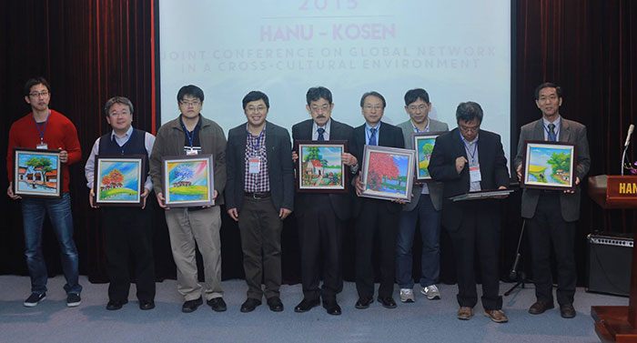

The conference proceedings is uploaded to this website
This year, there are 50 papers that are accepted to present at the HKJC 2015 conference, and they are all included in the conference proceedings.
The papers’ authors come from 9-KOSEN (28 papers), Faculty of Information Technology, FIT - HANU (16 papers) and Post and Telecommunication Institute of Technology (6 papers).
The research papers are undertaken in a wide area of discipline including Electrical engineering, Electronic and Communication, Computer Science, Information Technology, Mechanical engineering, Architecture, Chemical, Biotechnology and Mathematic.
The HKJC 2015 conference proceedings are uploaded to this website. Please check it out
All participants have arrived back Japan safe and sound from the conference

Professor from Kumamoto College informed that all participants came back Japan safe and sound. Thank you very much for participating in this event, we hope that professors and students from both sides will keep the best memories about the activities.
The HANU-KOSEN Joint conference 2015 was great opportunity to build new networks among the participants, as well as to promote the exchange program between students of both parties.
We are really looking forward to other successful cooperation of both sides in the nearest future.
Gala dinner in building D7, Hanoi University

A gala dinner is organized by the committee to celebrate the participant’s contributions to the HKJC 2015 conference.
This is a great opportunity for students to interact in a relaxed environment, to share multicultural experience and get to know new people. This evening started with an aperitif at 18.00 and continued with a typical Vietnamese buffet dinner.
Technical sessions in four conference rooms
After the opening ceremony, four technical sessions are organized in different conference rooms: Ha Noi, Hue, Da Nang, Sai Gon in C building, Hanoi University, respectively. In this session the authors presented about their research ideas and results. Each presentation is approximate 20 minutes long including the discussion.
HKJC 2015 Opening ceremony
The opening ceremony of HKJC 2015 is held in A building, Hanoi University from 8.30am to 9.30am.
In the ceremony there are two welcome speeches from the president of HANU - Prof. Dr. Nguyen Dinh Luan, and the president of Kumamoto College - Prof. Dr. Tsutomu Hasegawa.
After that the president of Kitakyusyu College – Prof. Dr. Hiroshi Tsukamoto make a keynote presentation about “Introduction of KOSEN and the present status of international exchange surrounding KOSENs”.

The participants of this ceremony include the vice-director of Post and Telecommunication Institute of Technology – Prof. Dr. Tran Quang Anh, the vice-president of Kumamoto College – Prof. Dr. Yoshifumi Shimoshio, the professors and students from 9-KOSEN, HANU and Post Telecommunication Institute of Technology.
Cultural Exchange Activities between students from HANU and KOSEN

This program is held by the Youth Union of Faculty of Information Technology to promote mutual understanding and cultural exchange between students from KOSEN and HANU.
There are many benefits of incorporating cultural exchange between students from two parties. It not only helps to bring students some international experiences, but also provides them an opportunity to create an environment where students can embrace learning about a new culture and give back by sharing about their personal heritage, customs, and culture.
We tend to see that students involved with the program improve mutual understanding of the social premises such as language, custom, and cultural traditions, and strengthen heart-to-heart contacts through cultural exchange activities.